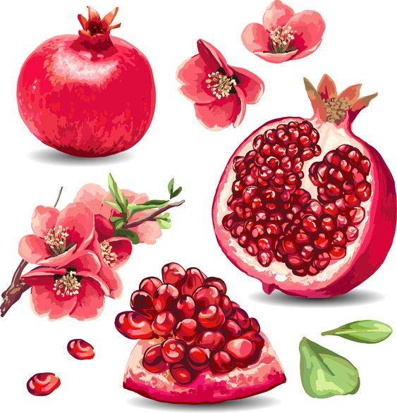

A fruta sagrada
A romã é consumida pelo ser humano há pelo menos seis mil anos. A fruta veio da região que fica entre o Irã e o Noroeste da Índia.
A bióloga Janie Garcia, da Universidade Federal Fluminense (UFF), conta que a romã foi considerada sagrada por várias religiões, que associavam o alimento à fertilidade: "Para os fenícios, a romã era símbolo de beleza. Os egípcios e romanos a usavam em templos e vestes, como decoração. Na Bíblia, a fruta é citada como símbolo de fartura e fertilidade".
Fonte: G1
Histórias e lendas
Esta superfruta também é recheada de histórias que permeiam o imaginário da humanidade. Para os gregos, é símbolo de fecundidade e, no passado, foi consagrada à deusa do amor e da beleza, Afrodite. Os judeus, por sua vez, acreditam que ela simbolize a esperança de um novo ano, melhor que o anterior. Talvez por isto, muitos brasileiros tenham o hábito de comê-la no Reveillon, guardando suas sementes na carteira, assim como as uvas. Em Roma, na Itália, é símbolo da ordem e da riqueza.
Fonte: A lavoura.
Símbolo de prosperidade e de sorte, fruta faz parte dos rituais da passagem de ano
O ritual de retirar caroços de romã (três ou sete) na virada do ano e no final do ciclo natalino, comê-los, guardar as sementes em partes da casa, ou mesmo na carteira, representa, na crendice popular, uma receita de prosperidade, sorte e dinheiro no próximo ano. "São retirados sete caroços na passagem do ano. Deve-se comer um de cada vez e guardar as sementes nos quatro cantos da casa. Isso representa, no folclore nordestino, sorte e saúde durante todo o novo ano que está começando", diz Mário Souto Maior, 78, pesquisador da Fundação Joaquim Nabuco, de Recife (PE), e autor de 42 livros sobre tradições nordestinas. O culto à romã não se limita ao folclore brasileiro. A fruta é símbolo de prosperidade e de sorte na mitologia grega e até mesmo em algumas religiões. "A romã é uma das sete frutas pelas quais a terra de Israel foi abençoada", diz o rabino Henry I. Sobel, presidente do Rabinato da Congregação Israelita Paulista. Apesar de não haver nenhuma menção ao consumo de romã na lei judaica, Sobel afirma que, entre os judeus de origem ocidental, existe o costume de colocar debaixo do travesseiro sementes da fruta na passagem do Ano Novo judaico, o Rosh Hashaná, comemorado em setembro. Para a folclorista Maria do Rosário Tavares de Lima, "Eram ritos agrários em homenagem às sementes e à fertilidade. Cada espécie de semente representava um deus ou uma deusa. Esses rituais eram feitos no plantio para propiciar colheitas fartas", diz.
Fonte: ROBERTO DE OLIVEIRA em folha Uol.
Beneficios
Melhora a memória
O suco de romã é rico em polifenóis que melhoram a função da memória. Um estudo relatou que indivíduos que bebiam suco de romã diariamente tiveram melhor desempenho em testes de memória em comparação com aqueles que usaram uma bebida com placebo.
Reduz a pressão arterial e combate doenças cardíacas
De acordo com um estudo, beber apenas 60 ml de suco de romã por dia pode ajudar a reduzir a pressão arterial, melhorar o colesterol e limpar a placa das artérias. O ácido púnico, principal ácido graxo da romã, também pode ajudar a proteger contra diversas doenças do coração.
Melhora a saúde óssea
Um estudo de 2013 descobriu que a romã pode ser usada para reduzir a perda óssea em animais com osteoporose, graças aos poderosos antioxidantes da fruta.
Auxilia na perda de peso
A romã é rica em fibras, que retardam a digestão e ajudam a manter a sensação de saciedade por mais tempo. E, quanto mais saciado você se sentir, menor será a sua ingestão de calorias.
Combate a acne
Os antioxidantes da romã ajudam a combater a acne, afastando a inflamação que pode causar erupções cutâneas. Além disso, também promove a hidratação da pele, sem deixá-la oleosa.
Fonte: eCycle
Site criado para estudo de HTML CSS e responsividade.